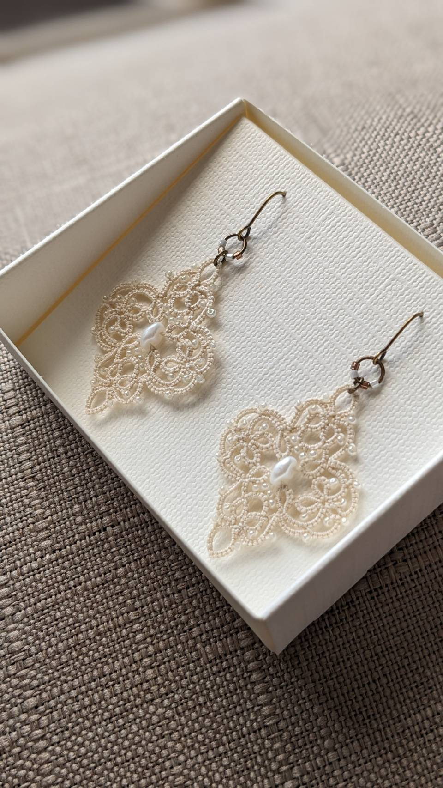
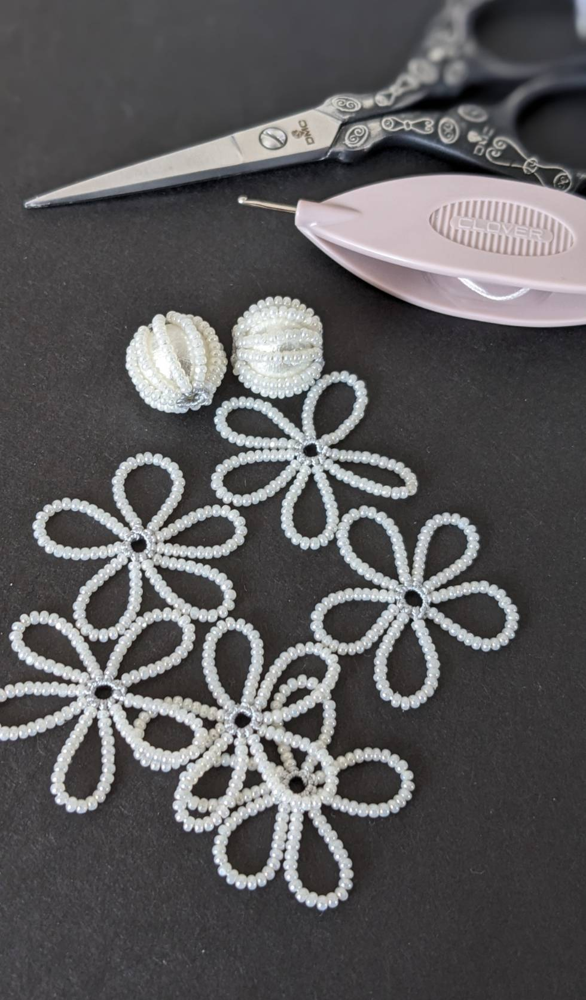

about the craft

My story
タティングレース
小さな舟形のシャトルに糸を巻き、ひとつひとつ結び目を重ねながら模様をつくるタティングレース。 気がつけば長く続けてきました。
作品づくりも教室も、タティングレースの楽しさをもっと多くの人に知ってほしいという思いから始まっています。 初めて結べた時の嬉しさや、少しずつ模様になっていく感動を忘れずに、これからもたくさんの方と一緒に結んでいきたいと思っています。
現在は長野県を中心に、タティングレース作品の制作・販売、オーダーメイド、教室活動を行っています。
made by
Tamayui
教室・オーダーを公式LINEで相談する ↗